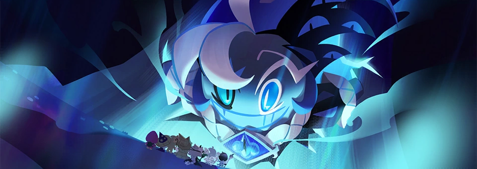
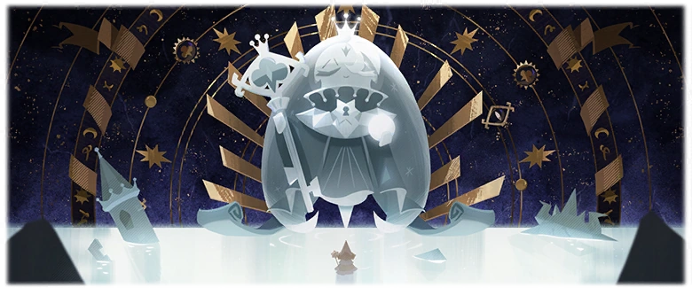
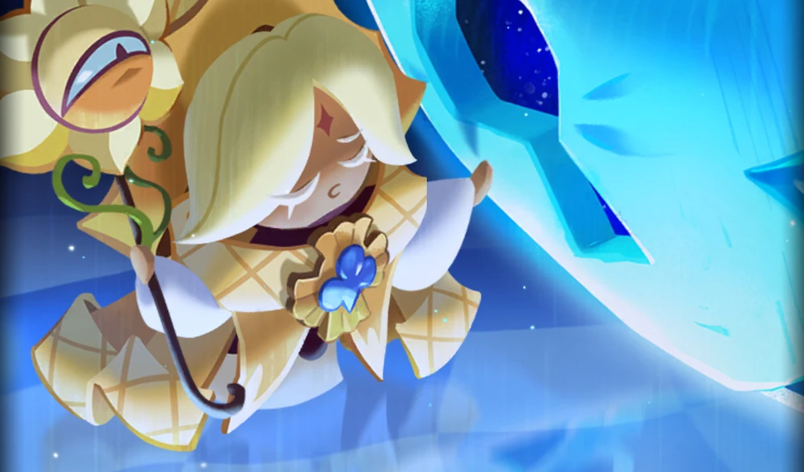

The Beast of Deceit
Shadow Milk Cookie
쉐도우밀크 쿠키
| Abbr. & Nicknames |
🇬🇧 SM, smilk, shmilk 🇰🇷 쉐밀 (shamil), 쉠 (shem) 🇯🇵 シャドミ (shadomi) |
|---|---|
| Gender | male? Ambiguous - as a shapeshifter, he's taken on myriad feminine or unspecified identities, but there's never been any formal word on if he's intended to be read as genderfluid. |
| Pronouns | he/him |
| Age | immortal adultImplied to have been created already fully grown. |
| Voice Actor(s) |
🇬🇧 CJ Pawlikowski 🇰🇷 강수진 (Kang Soo-jin) 🇯🇵 鳥海浩輔 (Toriumi Kosuke) 🇹🇼 陳余寬 (Chen Yukuan) 🇹🇭 อภิชิต ลิขิตลิ้มปรีชา (Aphichit Likitlimpreecha) |
🙶 When the World of Desserts was at its infancy, the Witches baked five Cookies to help them in their creation of the world (...) as almighty envoys of the Great Creators.
Knowledge, Volition, Happiness, Change, and Solidarity. The Dessert World bound by these Five Virtues was nothing short of paradise.
Alas... The perfect age was short-lived. Absolute power begets nothing but arrogance (...) and thus, the Five Virtues, too, became distorted, twisted... Reduced to Deceit, Apathy, Sloth, Destruction, and Silence. 🙷
- Elder Faerie Cookie (Secrets of the Silver Kingdom)
Shadow Milk Cookie was first introduced as a non-playable character to CRK in the 3rd anniversary update Secrets of the Silver Kingdom, released January 19th 2024. As one of the first Fans often assume they were the first, but context suggests they were a remedy to pre-existing turbulence and some long established worldbuilding also makes this idea otherwise dubious. cookies to be granted life by Earthbread's "Godly Creators", Shadow Milk once served as the graceful and benevolent Fount of Knowledge for all of cookiekind to seek out wisdom from. However, after growing disillusioned and spiteful over how cookies rejected his Truths to instead cling to more "palatable" falsehoods, he would cast aside his role as a divine emissary to instead embrace the spread of Deceit - and it was through this corruption of both his values and Soul JamThe physical vehicle that his virtue (and later its corrupted form) resides within. To this end, all forms of Soul Jam and their associated virtues are regarded as (sentient?) forces of nature that can be wielded by their owners as incredibly powerful forms of magic, and Soul Jam is intrinsically connected to the lifeforce/willpower of it's wielder in turn. that he was reborn into a vicious and unpredictable puppetmaster, stringing together lies to cause upheaval across Earthbread for his own entertainment.
This heel-turn into chaos and destruction was met with divine retribution by way of his Soul Jam being split between its corrupted form of Deceit and purer form of Truth, as well as him being subject to indefinite imprisonment within the Silver Tree alongside his fellow former emissaries - and thus did the Beast cookies collectively fade from cookiekind's memory as a silently forgotten evil, while the untainted halves of their virtues were resdistributed to a new brigade of heroes who earned their power through tests of worth (as opposed to birthright).
Beast-Yeast 1-2
Having patiently waited all these yearsWe've never gotten an exact number for just how long the Beasts were in the Silver Tree for, but surrounding context suggests it was at least a couple centuries. for the opportunity to break free from imprisonment (including one botched attempt before the events of the main story), Shadow Milk would be the first Beast to introduce himself to the protagonists after they failed to protect the Silver Tree's degrading seal - and included in their number was the cookie who just so happened to have been bestowed the uncorrupted portion of Shadow Milk's Soul Jam, Pure Vanilla Cookie.Shadow Milk was already quite aware of Pure Vanilla's existence long before they first met, which he gladly uses to his advantage to psychologically torment the Ancient in all of their proceeding interactions. They have a very normal relationship.
 🙶 Oh, I see I have quite an audience here!
I am SO terribly sorry to have kept you waiting! 🙷
- Shadow Milk Cookie (Secrets of the Silver Kingdom)
As the walking embodiment of lies, Shadow Milk Cookie's modus operandi rests in disorienting others as much as possible - a majority of his screen time during Theater of Lies is spent giving a rolling commentary that belittles the main ensemble, casts doubt upon the trustworthiness of their allies, and attempts to distract all parties from the fact he's just set an entire kingdom ablaze. Befitting of his harlequin image, his favorite method of disarming his opposition lies within mocking illusions and outlandish declarations - yet for how absurd his games may seem, one cannot help but wonder if there really is a sliver of truth to his words.His posturing as this nigh-untouchable "god of magic" could possibly be likened to how real world court jesters of the Middle Ages were often formally employed entertainers to aristocracy, who by way of Jester's Privilege could freely criticize authority and deliver harsh truths without fear of reprisal - after all, who would ever take the words of a fool seriously?
🙶 Shadow Milk Cookie is a vicious trickster donning a harlequin costume, but he is not only a funny, silly clown. At times, he takes on a role of a show host, an MC. Sometimes, he is a storyteller making up fairytales on the fly. But as many-faced a character Shadow Milk Cookie is, he is definitely a Cookie whose goal is to inspire dread in the protagonist team. 🙷
- Kang Soo-jin (Beast-Yeast Developer's Commentary)
Beast-Yeast 7-8
Despite his relatively open-and-shut presence in the story at the time, Shadow Milk would quickly become the subject of an explosive amount of positive feedback, fandom speculation, and requests from the playerbase to one day be made into a playable characterWith the focus of the Beast-Yeast plot being entirely centered on all five of them becoming playable characters, it may seem in retrospect like this was the obvious outcome - but for those interim couple months just after Theater of Lies, we genuinely had NO idea what their plans for this new batch of characters was, hence the high demand. There were some pretty good memes out of the whole thing. - and it would be just under one year later on January 15th, 2025 that such demands would become reality by way of his own dedicated story update for the 4th anniversary: Spire of Shadows.
🙶 Scream and shout all you want -
in the end, you're gonna thank me! 🙷
- Shadow Milk Cookie (A Game of Truth and Deceit🃏)
In a bid to take back the "stolen" half of his Soul Jam from his successor, Shadow Milk lures the Ancient hero Pure Vanilla and his young companions into his personal domain, the Spire of All Knowledge - an initially tranquil and elegant tower that quickly warps into a chaotic and unending maze that twists and reforms at the whims of it's master; as if the very environment itself was hellbentGiven how Shadow Milk repeatedly references the spire as an extension of himself (especially in the original Korean text), this idea may not be all that far off, though that of course depends on how literally you take his words. on keeping the ensemble trapped within its walls. It is upon this stage that Shadow Milk enacts his plan to whittle away at Pure Vanilla's resolve to in turn defeat him: Holding a mirror up between himself and this so-called "other half" of Knowledge, and spelling clear just how similar his past life was to Pure Vanilla's present one - in his eyes, the hero of Truth is outright destined to follow in his footsteps of loss, despair and corruption, so he might as well just give into it.
 🙶 My boy, the universe once was but an open book to me.
Time and space unfurled before my eyes.
You... You are merely following in my footsteps. 🙷
- Shadow Milk Cookie (Spire of Shadows)
It is only after conceding to Shadow Milk's cruel deceptionsAs in: actively altering Pure Vanilla's memories and gaslighting him into believing that Shadow Milk has been with him over the entire course of his life. While Pure Vanilla eventually discovers this to be false, outside evidence still suggests that he's legitimately been observing him since the events of the game's prologue. and fully embracing Deceit, however, that Pure Vanilla is able to flip the mirror back around and shine a light upon the Truth that hides behind the Beast of Deceit's performative mask: At the heart of his character, Shadow Milk Cookie is profoundly a lonely cookie, and it is because of this heavily repressed desire for connection - for someone to truly see him - that he has turned to his persona of a maniacal, disgraced deity who violently lashes out at those who he cannot perfectly predict and control. It becomes hard not to read his attempts to drag the first cookie who could possibly relate to his struggles down to his level as a cry for help, under such pretenses.
 🙶 Poor, sorry thing.
It no longer knows what it desires. 🙷
- Pure Vanilla Cookie (Beast Raid Event - Mask of Lies)
And yet, despite receiving the offer of companionship upon being defeated, Shadow Milk is completely enraged over his own tactics of deception being used against him,Wherein Truthless Recluse promised him that they "belonged together" as two cookies of Deceit and that he would be forever by his side. and flees from Pure Vanilla with the simple promise that they will meet again. As it currently stands in the narrative, Shadow Milk stands at a crossroads between working for a villainous superior that he doesn't appear to back the goals of (nor trust the methods of), versus turning and embracing Truth and understanding at the cost of an unthinkable amount of vulnerability. When the Call of Destiny comes for that final encounter, what will his choice be?
...For now, we'll have to wait and see.